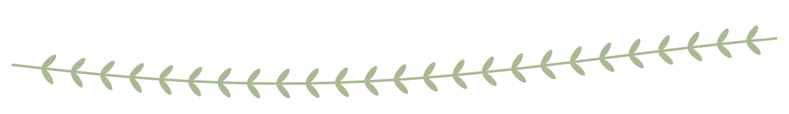
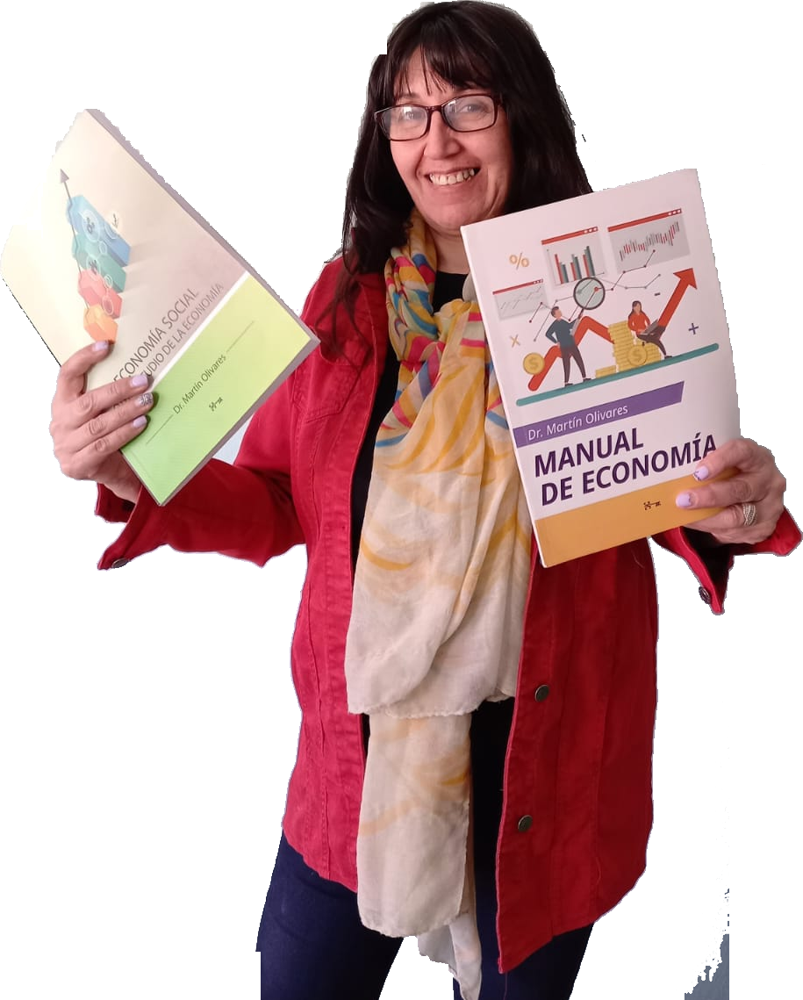

Dos caminos, una misma idea: aprender herramientas concretas, a tu ritmo y con constancia. Elegí el espacio que te corresponde.
Material complementario para reforzar lo que vemos en clase y para quien quiere arrancar su propio emprendimiento: costos, marketing, finanzas y armado del CV, aplicados a la realidad de la zona.
Cada curso es independiente, pero juntos forman una trayectoria que culmina en tu propio plan de negocio.
No forman parte de la ruta del emprendedor, pero son útiles para muchos perfiles.
Un espacio de formación para cooperativas, mutuales, asociaciones civiles, cooperativas de cuidado y organizaciones de la economía popular. No para competir mejor: para fortalecer la organización y comunicar la economía que ya hacen.
Las herramientas de marketing están calibradas para el mercado y dejan invisible lo que distingue a una organización social: la reciprocidad, el arraigo y el cuidado como bien común. Estas capacitaciones ofrecen un marco propio, que no se aplica desde afuera sino que se construye con cada organización —nadie sabe mejor que ella qué es y qué hace.
Una tecnología social de comunicación para organizaciones de la ESCyS, en seis módulos de 1 h 30, con autoevaluación y constancia por módulo.
En preparación, dentro de la misma línea de trabajo territorial.


Soy Carina Luna, docente de Economía y Administración. Acompaño a jóvenes y adultos en la EPJA N° 753 de Rawson y a quienes deciden emprender un proyecto propio.
Me estoy formando en la Maestría en Economía Social, Comunitaria y Solidaria, un enfoque que entiende la economía como algo que sucede entre personas y comunidades, no solo entre empresas y consumidores. Desde ahí pienso estos dos espacios: uno para el aula y el emprendimiento, otro para las organizaciones que sostienen la vida en común en el territorio.
Los cursos son y van a seguir siendo gratuitos. Si te resultó útil y querés colaborar para que llegue a más personas, podés hacer un aporte solidario al finalizar. Los fondos se destinan a financiar emprendimientos de mujeres y fortalecer organizaciones del tercer sector que trabajan por una economía más justa en el territorio.
Elegí tu espacio arriba, entrá al curso y hacelo a tu ritmo. Al finalizar cada módulo descargás tu constancia.
Elegir mi espacio →